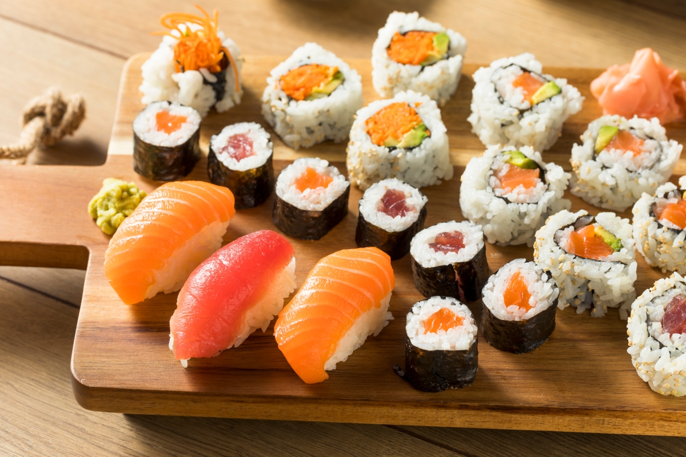

My favorite food Sushi

Sushi is a Japanese dish featuring specially prepared rice and usually some type of fish or seafood, often raw, but sometimes cooked.
And though you might automatically associate the word sushi with raw fish, it's actually the rice that is the most important ingredient. Indeed, the word "sushi" refers to the sour flavor of the vinegared rice. Regardless of the toppings or fillings, sushi always includes rice.
As a matter of fact, sushi rice is so important that sushi chefs in Japan undergo years of training just to learn how to cook the rice properly, before they ever begin to handle any fish or seafood.